1. Giới thiệu về phố cổ Hội An
Du lịch phố cổ Hội An là trải nghiệm thú vị và đáng nhớ với nhiều bạn trong và ngoài nước. Phố cổ Hội An là địa điểm du lịch nổi tiếng cách trung tâm thành phố Đà Nẵng khoảng 30km về phía Tây Nam. Không ồn ào, náo nhiệt, Hội An mang vẻ đẹp bình lặng và cổ kính. Sức hấp dẫn của đô thị hơn 400 năm tuổi xuất phát từ những kiến trúc cổ, những nhà mái ngói rêu phong, những con phố đèn lồng đầy màu sắc,...
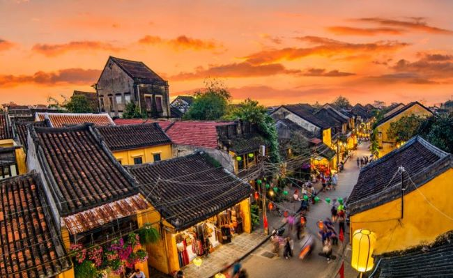Ngoài ra, Hội An cũng nổi tiếng với những lễ hội truyền thống đặc sắc như: lễ hội thành hoàng làng, lễ tưởng niệm các tổ sư ngành nghề, lễ kỷ niệm các bậc thánh nhân tôn giáo,... và các trò chơi dân gian như hò khoan, hò giã gạo, bài chòi,...
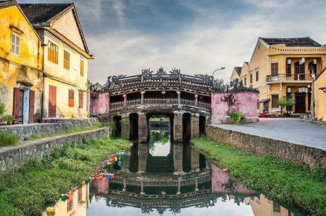Không chỉ được đắm mình trong vẻ đẹp bình dị của phố cổ, du lịch phố cổ Hội An bạn còn được khám phá sự giao thoa giữa các nền văn hóa phương Đông đến từ Nhật Bản, Trung Quốc và văn hóa Việt. Bởi Hội An vốn là thương cảng đông đúc và sầm uất nhất tồn tại dưới triều Nguyễn cách đây khoảng 200 năm, chính sự giao thương giữa Việt Nam và các nước khác (Nhật Bản, Trung Quốc,...) đã tạo nên một Hội An đa văn hóa, đa sắc màu tồn tại đến ngày nay.
2. Du lịch phố cổ Hội An lý tưởng nhất vào thời gian nào?
Du lịch phố cổ Hội An lý tưởng nhất là từ tháng 2 đến tháng 4 hàng năm bởi vào thời gian này tiết trời xuân mát mẻ, Hội An ít mưa & có nắng nhẹ rất thích hợp để khách du lịch đến tham quan.
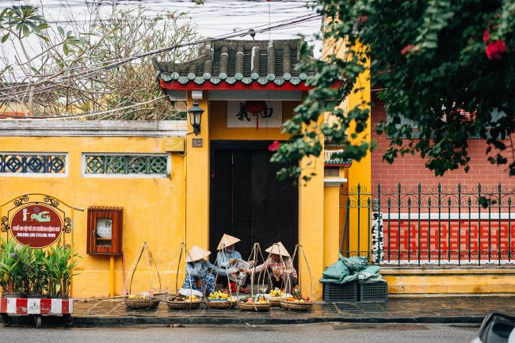Tháng 5 đến tháng 8 nắng đẹp, tuy khoảng thời gian tháng 5 - tháng 6 thời tiết một số ngày nắng gắt cần chịu khó một chút nhưng bù lại đây là thời điểm tuyệt vời để lặn ngắm san hô tại Cù Lao Chàm. Bên cạnh đó, nếu có kế hoạch du lịch Hội An vào tháng 9 đến tháng 1 thì bạn nên cân nhắc vì lúc này ở Hội An đang là mùa mưa. Hãy chủ động theo dõi các dự báo thời tiết để có chuyến đi thuận lợi nhất nhé!
3. Cách di chuyển đến phố cổ Hội An
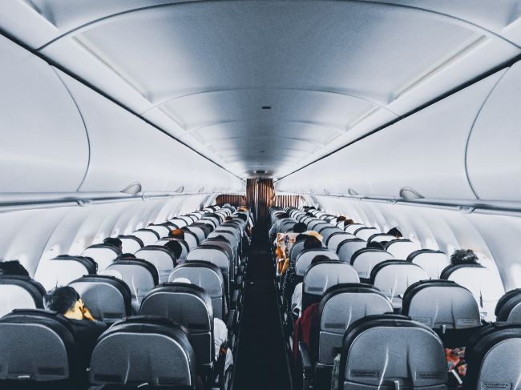Tàu hỏa: bạn có thể lựa chọn đi tàu hỏa đến ga Đà Nẵng. Nếu xuất phát từ Hà Nội hoặc thành phố Hồ Chí Minh, thời gian di chuyển kéo dài khoảng 14 - 17 tiếng. Giá vé giao động từ 400.000 - 1.800.000 VNĐ tùy vào loại tàu và loại ghế.
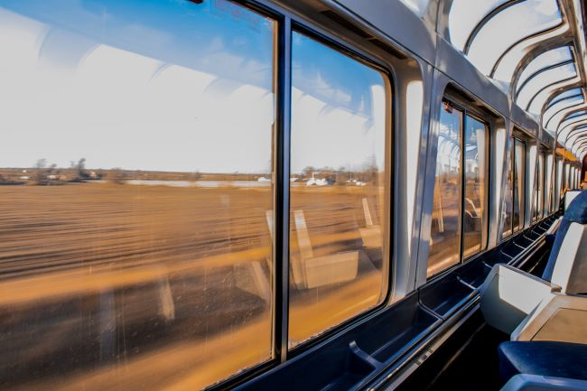Xe khách: Nếu muốn tiết kiệm chi phí hơn, bạn có thể lựa chọn xe khách của các nhà xe uy tín như Mai Linh, Hoàng Long, Thuận Thảo. Tuy nhiên nếu đi từ Hà Nội và thành phố Hồ Chí Minh sẽ mất 18 - 20 tiếng. Giá vé dao động từ 400.000 - 500.000 đồng.
Xe bus: Vì sân bay hay ga tàu đến Hội An đều ở Đà Nẵng nên sẽ có các tuyến bus rất thuận tiện để di chuyển giữa 2 địa điểm này.
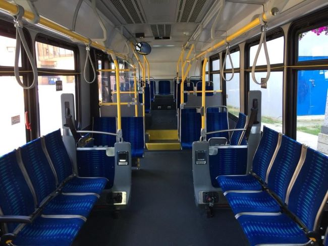Tuyến bus 01 (Bến xe Đà Nẵng - Hội An):
Thời gian di chuyển: 40 phút
Giá vé tham khảo: 20.000 VNĐ
Tuyến bus 14 (Tam Kỳ - Hội An):
Thời gian di chuyển: 1 giờ 40 phút
Giá vé tham khảo: 30.000 VNĐ
4. Các điểm du lịch tại phố cổ Hội An không thể bỏ qua
Khám phá bản đồ du lịch phố cổ Hội An, bạn nhất định không thể bỏ lỡ những địa điểm nổi tiếng & hấp dẫn dưới đây!
4.1. Các nhà cổ mang đậm kiến trúc xưa cũ, độc đáo
Nhà cổ Phùng Hưng: Là ngôi nhà của một thương gia giàu có bậc nhất hội An hồi ấy, được biết đến là nhà rộng nhất và cao nhất vùng. Nhà hoàn toàn dựng bằng gỗ lim tốt, gỗ quý, mang nét kiến trúc truyền thống và thể hiện cuộc sống khá giả.
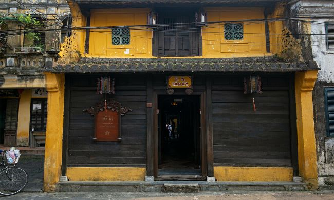Nhà cổ Tấn Ký: Căn nhà cổ quá đỗi nổi tiếng tại Hội An, là điểm thu hút khách du lịch dừng chân để tham quan và check-in. Trải qua cả thế kỷ, thậm chí qua trận lũ lịch sử năm 1964, ngôi nhà vẫn nguyên vẹn. Nhà cổ Tấn Ký là sự kết hợp các phong cách kiến trúc Việt Nam, Trung Hoa và Nhật Bản trong từng hoa văn. Từng chi tiết trong nhà được xây dựng vô cùng tỉ mỉ và tinh tế, khiến nơi đây trở thành địa điểm du lịch Hội An thu hút nhiều du khách.
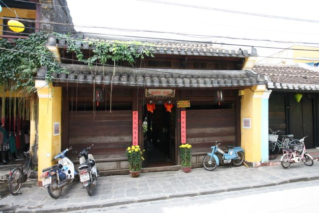Nhà cổ Đức An: Đây là ngôi nhà đậm chất phương Đông tại Hội An. Điểm đặc biệt của nhà cổ Đức An là sử dụng gỗ kiềng kiềng - loại gỗ chỉ có ở vùng đất Quảng Nam. Không chỉ thu hút bởi vẻ đẹp trầm mặc mà ở trong căn nhà gỗ này còn lưu giữ nhiều đồ đạc, sổ sách, … với cách bài trí gợi nhắc về một thời xa xưa.
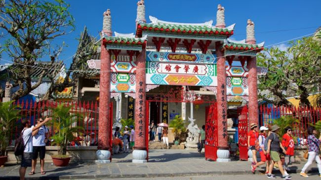4.2. Hội quán cổ kính nổi tiếng trong khu phố cổ Hội An
Hội quán Quảng Đông: Nằm ngay trung tâm phố cổ Hội An nên hội quán Quảng Đông rất được chú ý. Hội quán vốn là nơi gặp mặt làm ăn, do một hội thương nhân Quảng Đông Trung Quốc xây dựng, vì thế nó mang lối kiến trúc Trung Hoa đặc sắc. Công trình là sự kết hợp tinh tế của gỗ và đá, những họa tiết long, lân được khắc tinh xảo.

Hội quán Triều Châu: hay còn gọi là chùa Ông Bổn. Lối kiến trúc cầu kỳ, họa tiết trang trí theo truyền thuyết dân gian, đặc biệt có những họa tiết đắp nổi bằng sành sứ tạo nên nét riêng có một không hai của Hội quán Triều Châu.
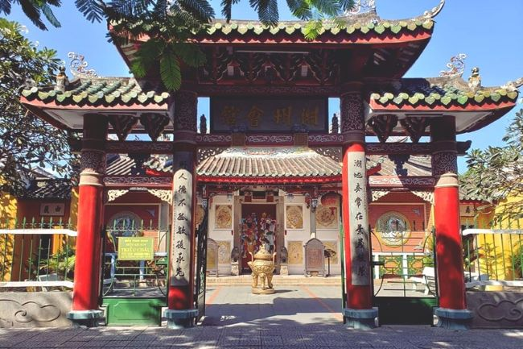Hội quán Phúc Kiến: được biết đến là hội quán rộng và đẹp nhất trong các hội quán ở khu du lịch Hội An. Sau cổng Tam quan, một vườn rộng lớn, có hòn non bộ với tượng cá chép vượt vũ môn. Đến hội quán Phúc Kiến, đừng quên ghé thăm khu vực chính điện thờ bà Thiên Hậu Thánh Mẫu, bà chúa sinh thai, 12 bà mụ. Ngoài ra, trong hậu tẩm, những người đến đây có thể thắp những vòng hương lớn, thường treo cùng tờ giấy ghi thông tin để cầu mong sức khoẻ và tài lộc.
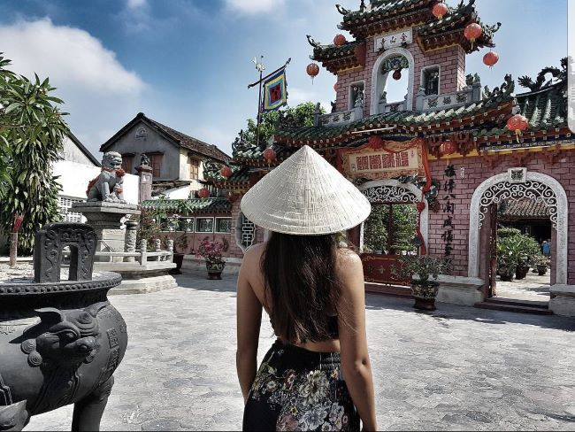4.3. Chùa Cầu - Địa điểm check in của mọi bạn
Đến du lịch phố cổ Hội An nhất định bạn phải dừng chân tại chùa Cầu - địa điểm check in độc nhất vô nhị tại đây. Chùa Cầu nổi bật với cây cột bằng gỗ, được sơn son, chạm trổ kỳ công, tỉ mỉ và đặc biệt nhất là được xây dựng trên một cây cầu đá có vòm cong mềm mại.
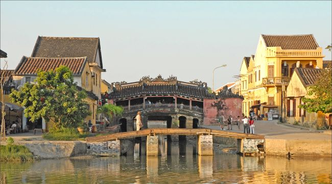Chùa Cầu là điểm sáng của mảnh đất Hội An, đã trải qua 400 năm mà vẫn sừng sững uy nghi vắt mình qua một nhánh sông Thu Bồn trầm mặc. Xưa kia, nơi đây là bến cảng giao thương sầm uất nên ở đó in đậm sự giao thoa kiến trúc nổi bật của Việt Nam và văn hóa Đông Á như Trung Quốc, Hàn Quốc, Nhật Bản. Tối đến khi chùa Cầu lên đèn, bóng chùa in xuống mặt nước, lung linh tỏa sáng giữa sự phồn hoa, nhộn nhịp của phố Hội.